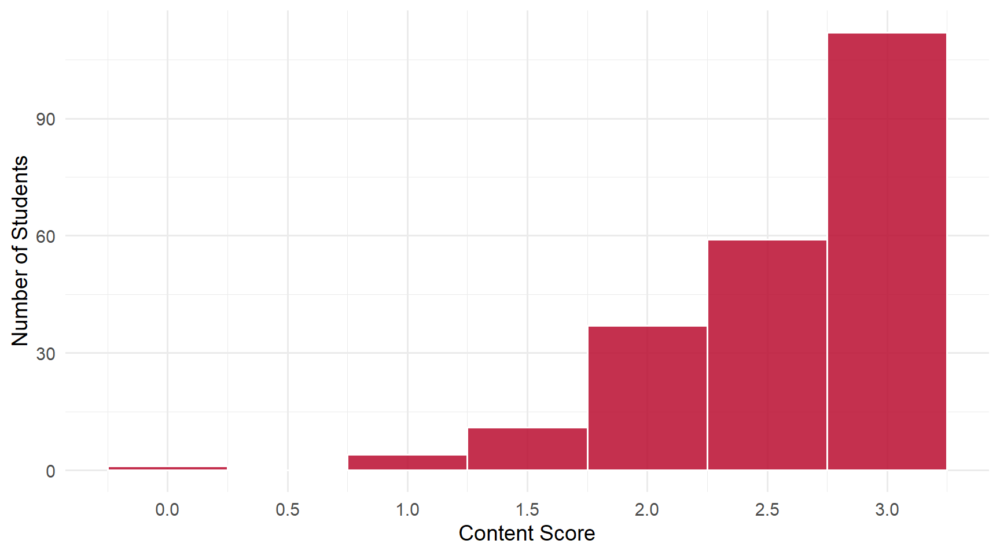
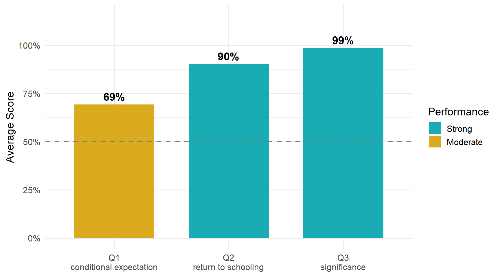

4 Daily 11 — Sep 29
4.1 Class Performance
Students: 224 | Content mean: 2.58 / 3 | Median: 2.75 | SD: 0.53 | Mean daily score: 9.72 / 10
Content scores ranged from 0 to 3 out of 3. (Your daily score adds the 8-point attendance credit for submitting; each question is worth 0.667 of the remaining 2 points.)
NoteThree questions, not four
The slide for this daily had a fourth question: what the population regression coefficients minimize. Only one of the two sections reached it, so it is not graded for anyone. Both sections answered it two days later, as Q1 of Daily 12.
Q3 was answered almost universally, and Q2 nearly as well. Q1 carried most of the lost credit, and its errors share one theme: answering with the name of an object instead of saying what kind of object it is.
4.2 Score Distribution
4.3 Performance by Question

ImportantThe pattern worth taking from this daily
Say what kind of object something is, not what it is called.
Q1 asked what kind of thing each expectation is. \(E(y)\) is a constant: a single number, the same for everyone. \(E(y \mid x)\) is a function of \(x\): a rule that gives a different number at each value of \(x\).
Most of the Q1 errors answered a nearby question instead:
- “Random variable” for the conditional expectation. True enough — when \(x\) is random, so is \(E(y \mid x)\) — but the blank asks what it is a function of.
- The notation itself, such as “\(E(y)\), \(E(y \mid x)\)”. That names the two objects a second time instead of saying what kind of object each one is.
- “Sample average” or “mean” for the unconditional expectation. A sample average estimates \(E(y)\). It does not say what kind of object \(E(y)\) is.
Each of these is a true statement about the topic, and none of them answers the question that was asked.
4.4 Questions
4.4.1 Q1: The unconditional expectation of \(y\) is a ___, while the conditional expectation of \(y\) given \(x\) is a function of ___.
TipCorrect Answer
A constant, and a function of \(x\).
\(E(y)\) averages \(y\) over the whole population, so it is a single number. \(E(y \mid x)\) averages \(y\) separately at each value of \(x\), so it moves as \(x\) moves: it is a function of \(x\). That function is the conditional expectation function, the CEF, which the regression line approximates.
WarningCommon Errors
- “Random variable” in the second blank, with “constant” right in the first. This was the most common error. Answers that named \(x\) alongside it, such as “random variable (\(x\))”, earned full credit.
- Restating the expectations in notation — “\(E(y)\), \(E(y \mid x)\)”, or the hatted versions — instead of filling the blanks. Writing the conditional expectation as \(\mu(x)\) or \(\hat\mu(x)\), with \(x\) as its argument, did name \(x\) and earned credit for that blank. Repeating \(E(y \mid x)\) did not, because it restates the question.
- “Sample average”, “sample mean”, “mean” or \(\bar y\) in the first blank. The sample average is how we estimate \(E(y)\); the blank asks what kind of object \(E(y)\) is.
- The two swapped, as in “function, constant”. The unconditional expectation is the constant one; the conditional expectation varies with \(x\).
- Other second blanks, such as “\(y\)”, “\(\bar y\)”, “CEF” or “function”.
“A number” or “value” for the first blank, and “random variable (\(x\))” for the second, all earned credit.
4.4.2 Q2: The results in Figure 6 suggest that the average return to another year of schooling is ___.
TipCorrect Answer
About 5.2 percent. Figure 6 prints the fitted line’s equation with a slope of 0.0521, so “5.21%” earned full credit too.
The regression is of log wages on years of schooling, so its slope reads as a proportional change: a slope of 0.052 means about 5.2 percent higher wages for each additional year.
WarningCommon Errors
- “5%”, rounding all the way to a whole number. The figure prints 0.0521, so “5.2” and “5.21” earned credit and “5” did not. This is the same rule as Daily 10, where “4” did not stand in for 3.94.
- The coefficient left unconverted, as in “0.0521” or “.052” on its own. That is the right number in the wrong form, so it earned half credit. Writing both forms, as in “0.0521, or 5.21%”, earned full credit.
- A couple of unrelated values, such as “17%” and “85%”.
Nobody gave last week’s 3.9 or 2.6, which were the obvious numbers to confuse.
4.4.3 Q3: The results in Table 2 show that the estimated return to schooling (is/is not) statistically significant at the 5% level.
TipCorrect Answer
It is. Table 2 reports the education coefficient as 0.052 with a standard error of 0.003, so the estimate sits more than 17 standard errors from zero, far beyond the 1.96 cutoff.
WarningCommon Errors
Almost everyone answered “is”. The two or three misses wrote “is not”. With the estimate more than 17 standard errors from zero, that is not a close call.
4.5 What the Class Did Well
Reading the figure. 87 percent reported the return to schooling correctly, many of them as 5.21%, read straight off the fitted equation. Many wrote both the coefficient and the percent, which is exactly the habit that avoids the half-credit error.
Significance. 99 percent called the estimate significant.
4.6 What to Review
- \(E(y)\) is a constant; \(E(y \mid x)\) is a function of \(x\). Know what kind of object each one is, not just what it is called.
- An estimate is not the thing it estimates. The sample average estimates \(E(y)\).
- Convert log points to percent, by multiplying the coefficient by 100, and keep the precision the output gives you: 5.2 or 5.21, not 5.
NoteHow this was graded
Every paper was scored twice, independently, against the same published rubric, by graders who could not see each other’s scores or your name. The two passes agreed on more than 97% of all scores; every disagreement was reviewed a third time against the rubric and settled with a written reason. Submitting the daily earns 8 of 10 regardless of content.